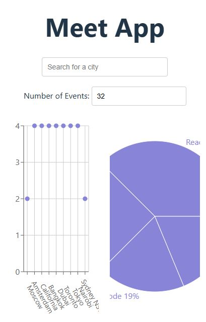

Meet App Project
The Meet App is a modern web application designed to help users discover and explore events in different cities. By leveraging the power of serverless architecture and Progressive Web Apps (PWAs), the Meet App delivers a seamless, fast, and cross-platform experience.

Project Objective
The goal of the Meet App is to make event discovery simple and accessible anytime, anywhere. Built with a Test-Driven Development (TDD) approach, the app offers features like:
- Search for events by city
- View event details & manage how many events are displayed
- Offline functionality - access cached events without an internet connection
- Add the app to your home screen for quick access
- Interactive charts to visualize event trends by city & category
Technologies Used
- React - A fast, responsive front-end framework
- AWS Lambda - A serverless backend for handling data requests
- Google Calendar API - Fetching real-time event data
- Jest & Cucumber - Ensuring quality through rigorous testing
- OAuth2 - Secure authentication
- Recharts - For data visualizations
- Service Workers - Enabling offline access
- Vercel - For deployment